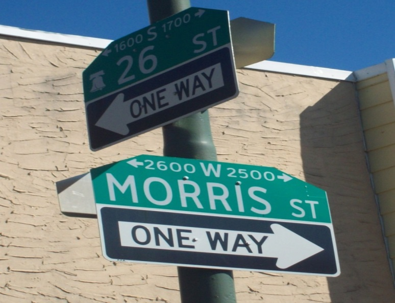

The Corner by a.j.jr
Salvatore Pescatore and his friends learn the life lessons of growing up in the sixties "on the corner" in South Philadelphia.

Ahh, the sixties!
Looking for love and his place in the world, Salvatore Pescatore ventures to the corner at 26th and Morris Streets in South Philadelphia to try and find the answers to the age old questions that confound adolescents and gets an education in the ups and downs that characterized the teen years in the rapidly changing sixties.
Join Sal as he tries to hang on to his Romantic principles and the poetry of Motown music, while experiencing the frustration of love and life during this dynamic time period: follow him as he comes to realize there are some things he can’t control, like facing the drafted in the prime of his life.
No matter where you grew up in the sixties, the sixties changed both you and the world: you may have known Sal; you may have been Sal. Somewhere, in this story, you’ll find yourself recalling those special moments of your adolescence.
Put on your own sixties soundtrack and recall that incredible time period that we all shared.